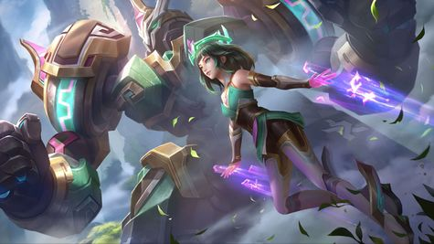

Edith: "Ancient Guard"
Summary
Edith is a relatively new hero in MLBB. She is unique for her ability to transform between Tank mode and Marksman mode. Therefore, she both has high health and high damage capabilities. She is usually first to engage the enemy and Tank form, than switch to Markman form to pick of enemies in the ensuing team fight. For this reason, she is relatively popular in high ranks. She is infamous for not having the potential abilites of a full Tank or full Marksman hero.
Roles
The Marksman role consists of heroes with high range, mobility, and attack damage. Great as Gold-Laners.
The Tank role consists of heroes with high health to protect allies in teamfights. Great as Roamers.
Lore
Edith resides as the guardian of Sanctum Island, containing the Evil Gods. She is a creation of the Ancient Ones along with Kaja and Uranus, beings to protect the safety of the universe. However, when she awoke from her slumber to fight the Evil Gods attempting to escape the island, she forgot her past memories. She was picked up by her human foster father, who made a living selling scraps. Years later, the Evil Gods successfully managed to escape the island, awakening Edith's old memories. The Ancient Gods sent Kaja and Uranus to help Edith and her mech, Phylax, to round up the Evil Gods and trap them of Sanctum Island again.